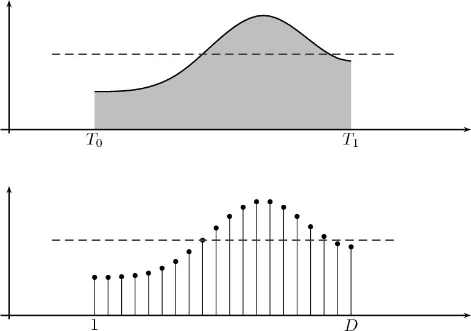
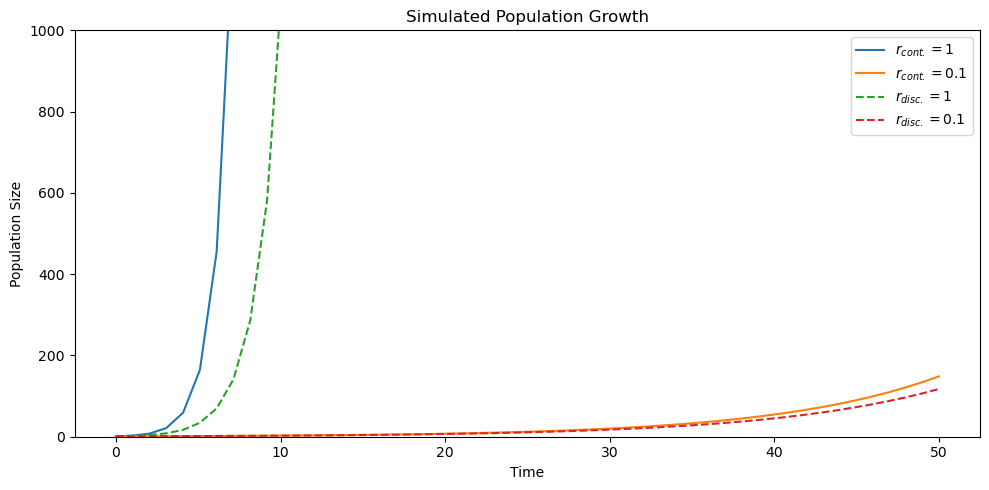
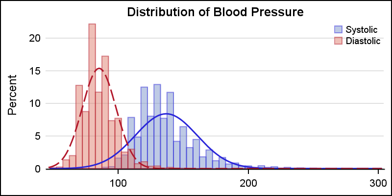
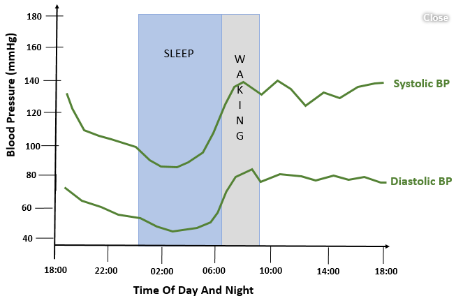

# Import necessary packages
from IPython.display import HTML, Image, YouTubeVideo
import numpy as np
import matplotlib.pyplot as plt3 MATH 232 - Math Models w/ Tech

3.1 Introduction & Syllabus
3.1.1 Instructor: Prof. Mario Bañuelos
3.2 Outline
4 Course Overview
4.1 Philosophies for this Course
- TIMTOWDI (Tim Toady)
- Write Working Code First, Optimize Second
- Give Space, Take Space
Goal for this course: To use mathematics & computation to investigate real-world phenomena.
# How To Paint
YouTubeVideo('9-ATP8xyDM0', width=640, height=480, start=240)4.2 Course Meetings
We will be meeting in-person at the scheduled time.
Some class meetings will be asynchronous. Please refer to the course schedule for more information.
You will be responsible to submit class participation assignments by the due date.
4.3 Homework
- All homework will be turned in on Canvas.
- Homework will be assigned one week before it is due.
- Homework 0 is due Friday, 8/26, at 11:59PM
- Homework 1 is due Wednesday, 8/31 at 11:59PM (no penatly for 1 week)
- Meet Your Peers Activity due 8/31, by 11:59PM
5 What is a mathematical model?
5.1 Group Discussion (10 minutes)
In your groups, introduce yourselves and then discuss the following questions:
- What is a mathematical model?
- How do ‘real-world’ contexts relate to modeling?
- What examples of models have you previously seen?
- BONUS: What isn’t a mathematical model?
A mathematical model is
- estabilishing a relationship between two or more quantities (dependence of one on the other – example: temperature)
- not sure / predicting population growth + predicting y based on x
- model (formalization) that uses math to estimate / describe a real-world situation
Real-world contexts relates to modeling by * traffic flow, covid cases in districts, disease + population growth, social media
Specific modeling examples include * differential equations, physics-informed model (for animation / video games), calculus (heat)
5.2 “All models are wrong, but some are useful.” - George Box
6 Purpose of math modeling
6.1 A Mathematical Model
Provides a framework in order to: * Analyze a dataset * Make future projections * Consider changes to the system * Evaluate costs * Determine an optimal strategy etc…
In general, it allows us to examine data and conduct hypothetical experiments the results of which have real implications which is safer, more affordable, and extremely versatile.
6.2 Models can be
- Continuous vs Discrete
- Deterministic vs Stochastic (random)
- Static vs Dynamic
- Theoretical vs Data-Driven
- Single class or multi-class
6.3 Continuous vs Discrete

t = np.linspace(0,50)
r1 = 1
r2 = 0.1
n0 = 1
n_cont1 = np.exp(r1*t) * n0
n_cont2 = np.exp(r2*t) * n0
n_disc1 = (1+r1)**(t) * n0
n_disc2 = (1+r2)**(t) * n0# Compare continuous and discrete growth with a dependency-light plot.
fig, ax = plt.subplots(figsize=(10, 5))
ax.plot(t, n_cont1, label=r'$r_{cont.}=1$')
ax.plot(t, n_cont2, label=r'$r_{cont.}=0.1$')
ax.plot(t, n_disc1, '--', label=r'$r_{disc.}=1$')
ax.plot(t, n_disc2, '--', label=r'$r_{disc.}=0.1$')
ax.set_ylim(0, 1000)
ax.set_title('Simulated Population Growth')
ax.set_xlabel('Time')
ax.set_ylabel('Population Size')
ax.legend()
fig.tight_layout()
6.4 Continuous vs Discrete
plt.show()Continuous Formula: n(t) = e^{rt} n(0)
Discrete Formula: n(t) = (1+r)^{t} n(0)
t is time, r is the growth rate, n(0) is the initial population
7 Deterministic vs Stochastic
Deterministic: Given the same inputs, the model outputs will be the same. Most (all?) functions you are familiar with are deterministic.
Stochastic: Includes elements of randomness. Model output may follow a certain trend, but specific output will change each time it is run.
8 Static vs Dynamic
Dynamic models change/evolve over time. Static models do not change over time
 |
 |
|---|
An example is using blood pressure data to create a histogram but an individual’s blood pressure may change during the day
9 Theoretical vs Data-Driven
A theoretical model is one formulated with assumptions of real-world problems without data. These models lack a specific application but have the benefit of extreme generality.
A data-driven model uses data obtained through experimentation, surveys, fieldwork etc to derive/estimate input values that will describe a specific system/situation. These models often lack generality but results have real-world implications.
The particular type and underlying structure of the model you choose is problem-dependent.
10 Types of Models
- Infectious Disease models
- Population models
- Network models
- Optimization & Image Processing models
- Classification models
11 The Modeling Process
YouTubeVideo('heQzqX35c9A', width=640, height=480)12 The Modeling Process
- What do you want to model? Why do you want to model it?
- Clearly define success in the context of your model. What bias are you introducing? What bias already exists?
- Determine the type of model you will create based on your definition of success, available data, and your mathematical background.
- Research similar models in the literature. What has been done? Is there a model you are using as a basis?
- State key assumptions needed to build the model.
- Mathematically formulate your model.
12.0.1 Counting Crowds
Technology check
13 Jupyter Notebook Basics
Jupyter notebooks are interactive, living documents that support text, Markdown, and code.
You can also configure it to run R, Julia, C++ and many more programming languages.